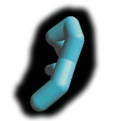
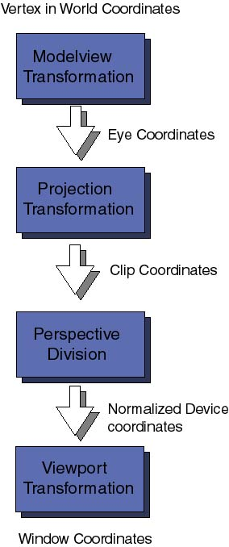

![[LinuxFocus Image]](../../common/May1998/border-short.jpg)
| Noticias Archivos Compañías Consejos |
Programación OpenGL: Escenas 3Dpor Miguel Angel Sepúlveda |
|
Después de un largo camino por otros temas, finalmente ha llegado el momento de hablar de gráficos en 3D bajo OpenGL. No voy a mentir diciendo que es un tema fácil porque no lo es. Cualquier buen programador de aplicaciones 3D con OpenGL, y en particular de animaciones, debe tener suficientes conocimientos de álgebra lineal, geometría analítica, física (mecánica) y por supuesto dominar el análisis numérico. Intentaré hacer el resto de esta serie lo mas accesible posible para todo el mundo. Desafortunadamente, no hay forma de evitar la necesidad de tener conocimientos sobre matrices, cómo los planos y líneas se representan matemáticamente en el espacio 3D, vectores, aproximaciones polinomiales a curvas, por mencionar solo unos pocos. Durante la última semana he estado pensando como presentar este material más complejo a una audiencia amplia. Los libros clásicos utilizan una metodología incremental paso a paso, más o menos el método que he seguido en los dos artículos anteriores. He decidido no seguir con esta metodología pues se necesitaría demasiado tiempo (meses) para conseguir llevar al lector al punto de poder escribir su propio código. En su lugar voy a aventurarme a utilizar otro método, que he decidido llamarlo "tratamiento de choque". Esta vez voy a incluir una demostración de una de mis simulaciones 3D y luego explicare bit por bit qué hace el código. Finalmente, intentaré explicar con más detalle todas las cuestiones que normalmente se tratan en los libros estándar de OpenGL. Creo que saltando directamente al final y dando al lector un ejemplo de código con algunas cosas interesantes incitará a los lectores a experimentar y a probar cosas, incluso aunque yo no haya dicho aun como funcionan todas las cosas exactamente. Espero que este método funcione y la gente lo encuentre rápido y más directo. Así que pongamos manos a la obra. Durante los 6 meses anteriores he estado trabajado en la universidad de Pittsburgh en una herramienta OO (Object Oriented) para el desarrollo de simulaciones de polímeros y geles. El proyecto está bastante avanzado, la física es muy interesante, incluso para informáticos, porque un gel es básicamente una red neuronal de polímeros y muchas de las técnicas desarrolladas para redes neuronales se pueden aplicar a la construcciones del gel. He elegido unos cuantos objetos de esta herramienta y los he empaquetado en esta sencilla demo: ../../common/May1998/example2.tar.gz. Se puede compilar bajo Linux, cualquier UNIX o sobre Windows 95/NT (suponiendo que ya tienes instalado GLUT). La demo muestra un polímero simple (una cadena lineal de monómeros enlazados) moviéndose en suspensión en una solución a una determinada temperatura. La dinámica es tentadora, se asemeja a una serpiente excitada. La animación es muy viva debido a las colisiones de las moléculas del solvente. No se puede ver el solvente, pero influye en el movimiento del polímero a través de las ecuaciones del movimiento. El modelo utilizado para dibujar el polímero es bastante sencillo; example2 controla las coordenadas (x, y, z) de cada nodo (monómero) a lo largo de la cadena polímero. En cada imagen (frame) de la animación dibujamos una esfera en las coordenadas del monómero y luego los unimos utilizando cilindros que van de monómero a monómero. Por tanto tenemos dos primitivas elementales 3D: una esfera y un cilindro. Como en cualquier molécula, la distancia entre monómeros cambia en el tiempo, con lo que no podemos utilizar "un cilindro" para dibujar todos los enlaces, se ha de re-escalar de acuerdo a la distancia entre cada par de monómeros. Primera pregunta: Has dicho que tienes dos objetos en 3D, una esfera y un cilindro unidad. digamos que ambos objetos están centrados en el origen de coordenadas. Si todo lo que sabemos sobre el polímero es la secuencia de (x, y, z) de los nodos, ¿cómo podemos escalar, rotar y trasladar las replicas de los cilindros para crear los enlaces de los polímeros? Por alguna razón que no logro comprender, los científicos informáticos han decidido cambiar el significado clásico de las coordenadas cartesianas: x es horizontal, y es vertical y z va en dirección al observador. Ten cuidado con esto porque si vienes de una formación matemática te puede confundir bastante. En la parte superior de la ventana de la animación se muestra información sobre el estado de la animación que te permitirá saber en todo momento el tiempo, la temperatura del polímero, temperatura media del polímero, temperatura de la solución, la fricción del solvente y el ángulo de rotación de la cámara exterior. Para tener una visión más amplia del polímero desde todos los lados, la cámara (tu punto de vista) gira lentamente al rededor del centro de gravedad del polímero. De echo la longitud del polímero que he elegido para la demo es tan corta que la rotación de la cámara no es realmente necesaria, con un poco de tiempo el polímero llega a girar él solo. Sigue adelante y edita el fichero example2.cxx y modifica la definición de POLYMERLENGTH a un valor entre 2 y 100. La cámara gira porque quiero que el lector se dé cuenta de un aparente problema: cambia del sistema de coordenadas. El sistema de coordenadas de los nodos es utilizadas por las ecuaciones del movimiento y por tato están expresadas en coordenadas del mundo, independientes del punto de vista concreto desde el que el usuario observa la escena. Estas coordenadas deben proyectarse a las coordenadas 2D x-y de la pantalla del ordenador. Cada vez que cambias el punto de vista, cambian las formulas que transforman las coordenadas internas del polímero en coordenadas 2D de la ventana. Segunda pregunta. ¿Cómo solucionas este problema? cambiando las ecuaciones del movimiento del mundo real a coordenadas 2D del punto de vista no es una solución, pues requiere demasiada álgebra, es muy complicado de implementar y es difícil no cometer errores. La respuesta a la segunda pregunta es sencilla. Sólo hay una opción: realizar toda la dinámica y la representación del modelo 3D (polímero) en las coordenadas del mundo y luego cambiar las coordenadas del mundo a las coordenadas 2D del punto de vista de la cámara en el momento de dibujar (render) la imagen. OpenGL es bastante eficiente realizando estas transformaciones, incluso se pueden realizar por hardware (para aquellos que posean una tarjeta gráfica con soporte OpenGL verán la diferencia). Pero antes de entrar a describir cómo OpenGL resuelve este problema, consideremos primero cuántas transformaciones de coordenadas hay desde el mundo real en 3D a las coordenadas finales 2D de la ventana. Primero viene la transformación de coordenadas del modelo (Modelview), para proyectar las coordenadas originales del mundo a las coordenadas de la vista (eye coordinates), estas son las coordenadas 3D relativas a la posición del ojo del que mira la escena (o sea las coordenadas de la cámara). Se llama transformación Modelview porque ----------------- It is called Modelview transformation because it really involves many similar though distinct operations. ----------------- Modelando y viendo proyecciones, lo último es análogo a posicionar una cámara de fotos en un estudio enfocando hacia la escena que se ha de fotografiar; el modelado de la proyección es entonces como posicionar el objeto a fotografiar en frente de la cámara. Siguiendo la secuencia de transformaciones, las coordenadas de la vista se pasan a las coordenadas de transformación de la proyección. El propósito de estas transformaciones puede parecer un poco esotérico a estas alturas. Después de posicionar la cámara en la dirección correcta y de posicionar los objetos en el campo de la escena, OpenGL quiere saber qué cantidad (volumen) de campo debe ser proyectado sobre la ventana 2D de la pantalla. Por ejemplo, la cámara puede estar dirigida hacia una montaña muy distante, el campo que vemos define un volumen de espacio muy grande. Los ordenadores sólo pueden trabajar con cosas finitas, por ello hay que especificar qué cantidad, de toda la escena, ha de ser recortada. Esta transformación también se encarga de eliminar las superficies que no se pueden ver. Las coordenadas finales obtenidas son las Clip coordinates, recuerda siempre que no es suficientes que tus objetos 3D estén en frente de la cámara, sino que deben estar situados dentro de los planos de recorte definidos por la transformación de proyección. Las distintas perspectivas 3D (como cónica u ortogonal) se definen en este nivel. Por el momento no entraremos en qué es una perspective division, ni cuál es la diferencia entre las coordenadas de recorte y las coordenadas normalizadas de dispositivo. No es necesario saberlo aun. La última transformación de coordenadas importante es la transformación del Viewport. Aquí las coordenadas 3D que han pasado por todo tipo de transformaciones 3D son finalmente proyectadas en el área 2D de la ventana de tu ordenador. Las transformaciones de coordenadas se representan por matrices (matrices de dos dimensiones). Para cada uno de los anteriores tipos de transformaciones hay una matriz asociada. Éstas pueden ser especificadas en cualquier momento del programa antes de dibujar la imagen. OpenGL mantiene una pila de matrices de transformación que se han de aplicar sobre cada punto de la escena. Esta es una técnica muy eficiente y útil que exploraremos en futuros artículos. Por el momento vayamos al código fuente, donde se definen algunas de estas transformaciones. En el fichero example2.cxx encontramos las ya familiares funciones reshape:
void mainReshape(int w, int h){
// VIEWPORT TRANSFORMATION
glViewport(0, 0, w, h);
// PROJECTION TRANSFORMATION
glMatrixMode(GL_PROJECTION);
glLoadIdentity();
glFrustum(wnLEFT, wnRIGHT, wnBOT, wnTOP, wnNEAR, wnFAR);
// MODELVIEW TRANSFORMATION
glMatrixMode(GL_MODELVIEW);
....
La directiva glViewport(x, y, width, height) especifica la transformación del Viewport: x, y son las coordenadas de la esquina inferior izquierda del rectángulo de la ventana de dibujo y width y height las dimensiones del viewport. Todos los números se expresan en pixels. Entonces la función glMatrixMode(), utilizado para seleccionar la matriz actual, es invocada con los parámetros GL_PROJECTION para comenzar la especificación de la transformación de proyección. Antes de especificar cualquier transformación de matrices es recomendable cargar la matriz unidad (que no hace nada sobre los vértices de coordenadas), esto se hace con glLoadIdentity(), asigna la matriz unidad a la matriz actual. Luego viene la declaración de la perspectiva 3D; la sentencia es glFrustum(left, right, bottom, top, near, far) declara los planos de recorte en las posiciones izquierda, derecha, abajo, arriba, cerca y lejos. Estos números están especificados en coordenadas del punto de vista (eye) y su magnitud determina la forma (la perspectiva) del volumen del espacio que se va a proyectar en el viewport (pantalla del ordenador). Quizás parezca complicado, a mí me llevo un tiempo acostumbrarme. La mejor forma de entenderlo es experimentando con varios números, recuerda siempre que has de elegir números de forma que el objeto modelado-visto caiga dentro de los planos de recorte o no verás nada en la pantalla. Hay otras formas de especificar la transformada de proyección. Con el tiempo llegaremos a verlas. Finalmente cambiamos la matriz actual a la matriz del modelview, otra vez con la función glMatrixMode() y utilizando GL_MODELVIEW como parámetro. La función mainReshape() continua con otras cosas que no tienen nada que ver y acaba. Lo que importa es que después de que la ventana principal ha sido re-dimensionada, esta función ha especificado el viewport y la transformada de proyección y finalmente establece como matriz actual, la matriz modelview. Lo que sucede luego es que la función mainDisplay() termina la especificación del modelview y finalmente dibuja el polímero con scene():
void mainDisplay(){
glutSetWindow(winIdMain);
glClear(GL_COLOR_BUFFER_BIT | GL_DEPTH_BUFFER_BIT);
// Limpiar los buffers de color y profundidad
// Esto es como limpiar la pizarra.
// Continuar con la transformación MODELVIEW:
// posicionar y orientar la cámara.
glLoadIdentity(); // Cargar matriz unidad
glTranslatef(0.0, 0.0, -4.0); // Mover la cámara 4 unidades atrás
// dejamos la cámara apuntando en la dirección "-z". Realmente
// esto funciona moviendo la siguiente escena 4 pasos en el eje "-z".
// Solo los elementos de la escena que queden dentro de el volumen
// de representación (ver transformación de proyección más adelante)
// se verán en la pantalla.
// Dibujar el polímero
glScalef(0.5, 0.5, 0.5);
glRotatef(Angle, 0, 1, 0);
scene();
glutSwapBuffers();
};
Espero no haber confundido mucho al lector por haber utilizado dos sub-ventanas. No estoy explicando cuestiones relativas a las sub-ventanas porque ya las expliqué en el artículo anterior ( Gestión de ventanas). Si tienes alguna duda, puedes ir a este artículo para refrescar la memoria. Esta función es muy simple. Primero glClear borra los buffers de color y profundidad. El buffer de profundidad es importante ahora en 3D porque la coordenada z de cada vértice ha de ser comparada para determinar las superficies ocultas y eliminarlas. Después cargamos la matriz unidad en la matriz actual modelview e invocamos las tres transformaciones de modelado:
Unas palabras de advertencia: el orden en el que se aplican las transformaciones de modelado es muy importante. Es necesario comprender qué es lo que sucede con la matriz de Modelview cada vez que invocas a una transformación de coordenadas. Cada transformación Ti se representa matemáticamente por una matriz Mi. La superposición de una secuencia de transformadas Tn Tn-1... T1 (por ejemplo: translación + escalado + rotación ) es representado matemáticamente por una única matriz M = Mn Mn-1 .... M1. El orden es crucial porque cuando la transformación compuesta M actúa sobre un vértice v, las transformaciones son realmente aplicadas en el orden inverso: Primero M1, luego M2, etc.. y finalmente Mn. En nuestro código ejemplo, he declarado la transformación en el siguiente orden: translación -> escalado -> rotación. Por tanto, cada punto del modelo en las coordenadas del mundo va a ser rotado -> escalado -> trasladado antes de ser proyectado sobre la pantalla gráfica. Siempre has de tener este orden inverso de transformaciones en la cabeza cuando escribas código, en caso contrario puedes obtener resultados no deseados muy sorprendentes. La función scene() sencillamente ejecuta el dibujado 3D (render) del objeto polímero. Para entender como se construye el modelo 3D, tenemos que ir al fichero Gd_opengl.cxx y echar un vistazo a la función miembro draw(GdPolymer &p). Hay un bucle principal que pasa por cada monómero de la cadena del polímero, obtiene sus coordenadas x,y,z dibuja una esfera en esa posición, y luego dibuja los cilindros a lo largo de los enlaces que conectan cada monómero ¿Recuerdas la primera pregunta? Aquí tenemos una posible solución... Si encuentras otra más rápida dímelo. Hay un cosa más que el lector debe saber para entender completamente la rutina de dibujado del polímero ¿Para qué sirven lasfunciones: glPushMatrix() y glPopMatrix()? Hay sólo dos primitivas geométricas en el modelo del polímero, una esfera de radio 0.40 centrada en el origen y un cilindro superior derecho de altura 1.0 y radio 0.4. El polímero se construye utilizando dos primitivas y una serie de transformaciones para situar las esferas y cilindros en las posicies correctas. Cada vez que se ejecutan las sentencias glCallList(MONOMER) o glCallList(CYLINDER) se dibuja una nueva esfera y cilindro en el origen. Para mover las esferas a las coordenadas x,y,z necesitamos una translación (ver glTranslatef(x, y, z)); para dibujar y posicionar un cilindro es más complicado porque tenemos que orientarlo en la dirección adecuada (en mi algoritmo utilizo una transformación de escalado->rotación). Pero cualquiera que sea el método que utilices para construir modelos complejos 3D, no hay duda que necesitarás varias transformaciones de translación, rotación y escalado. Cuando se invoca la función scene(), la matriz actual de la máquina de estados OpenGL es la matriz MODELVIEW, como he mencionado anteriormente, ésta es la matriz que representa la proyección del modelo de coordenadas del mundo a coordenadas de recorte. Éste es un problema serio, mientras la matriz MODELVIEW sea todavía la matriz activa, cualquier nueva transformación aplicada para construir el modelo 3D se añadirá a la matriz actual, con la consecuencia indeseable de destruir la transformación MODELVIEW. De forma similar, algunas veces queremos aplicar determinadas transformaciones 3D a una parte del modelo pero no a otras (por ejemplo, escalar un cilindro pero no la esfera). OpenGL resuelve este problema utilizando una pila interna de matrices. Hay dos operaciones básicas sobre esta pila implementadas mediante glPushMatrix() (meter en pila) y glPopMatrix() (sacar de pila). Examina una vez más el código fuente de scene() y observarás que antes de dibujar la esfera de cada nomómero llamamos una vez a "push", para mover la matriz MODELVIEW a la pila, y al final del bucle llamamos a "pop" para restaurar la matriz MODELVIEW. El bucle interno que dibuja los enlaces del polímero tiene sus propios "push" y "pop" para aislar las transformaciones de escalado y rotación de las translaciones que afectan a ambos, esfera y cilindro. Hay mucho más que decir sobre transformaciones 3D y pilas de matrices. En este artículo sólo hemos arañado la superficie de estas cuestiones. Por el momento lo dejaremos así y dejaremos que el lector interesado explore el código fuente de la demo e intente construir sus propios modelos 3D. El código example2 también utiliza unas cuantas característica aun no estudiadas: materiales e iluminación. Dejamos la presentación de estos temas para artículos futuros. La próxima vez, continuaremos explorando con mayor profundidad las transformaciones 3D y las pilas de matrices, también mostraremos como utilizar ambas características de OpenGL para implementar un robot móvil. Hasta entonces, pasatelo bien con OpenGL. |
Traducido por Ismael Ripoll
- Lee otros artículos de esta serie: Trazado de polígonos simples, Más sobre líneas.
Páginas web mantenidas por Miguel A Sepúlveda.